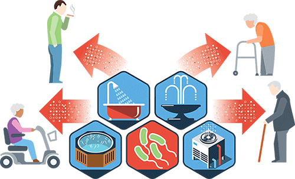

La legionella es una bacteria ambiental capaz de sobrevivir en un amplio intervalo de condiciones físico-químicas, se multiplica a temperaturas comprendidas entre los 20ºC y 45ºC y se destruye en exposiciones mayores de 70ºC. Su medio natural de proliferación son las aguas superficiales como lagos, ríos, estanques, etc. Puede colonizar los sistemas de abastecimiento de ciudades y, a través de la red de distribución de agua, incorporándose de esta forma a los sistemas de agua sanitaria u otros sistemas que requieren agua para su funcionamiento.
La letalidad de la legionella no suele superar el 5% cuando se trata inmediatamente a la persona afectada, en caso contrario la letalidad puede llegar a alcanzar cifras de hasta el 20%. Los grupos de mayor riesgo son aquellas personas con patologías previas o los casos de infecciones nosocomiales que pueden llegar a alcanzar un 40% de letalidad.
No hay pruebas de que esta enfermedad se pueda transmitir de persona a persona y aunque su medio natural de proliferación sean las aguas superficiales de ríos, lagos o estanques, ésta sólo es peligrosa cuando se encuentra en forma de aerosol, ya que es necesario que las gotas de agua sean de un tamaño inferior a 5 micrómetros para que puedan acceder a los pulmones.
Podemos catalogar como instalaciones de riesgo los sistemas de aire acondicionado, torres de refrigeración, duchas, sistemas de riego o antiincendios… definitiva cualquier sistema que pueda esparcir pequeñas gotas de agua en el aire.